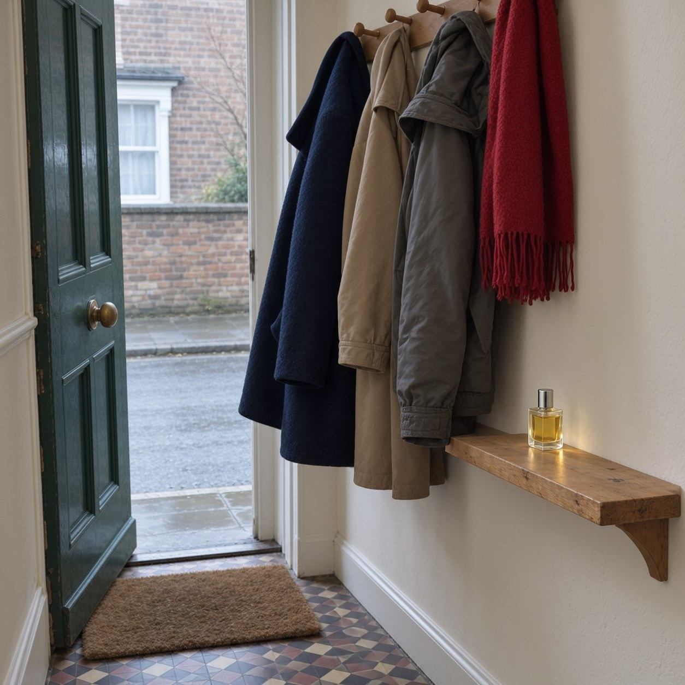
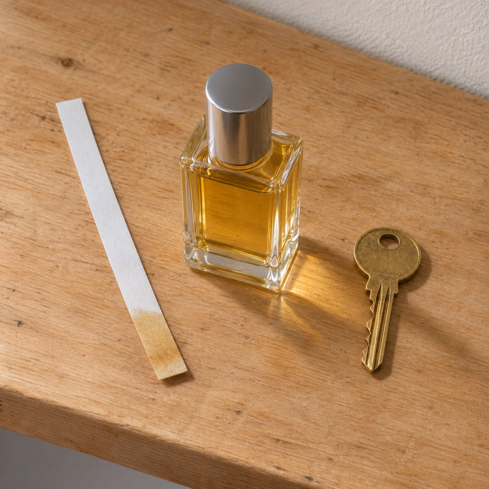

First Breath In


Every house has a smell, and the people who live in it are the only ones who cannot smell it. The nose stops reporting what never changes. A few minutes after you walk in somewhere, its smell is gone for you, and after a few weeks it is gone for good. It has not left. It has become you.
So for a year I asked everyone who came to my door the same question, in the first breath after they stepped inside: what does it smell like in here? Friends, a neighbour, a plumber, the man who reads the meter. Ninety-one people. Toast, said one. Wet coats. Pencil shavings. A church. Oranges going soft. Warm dust on a lamp. One said, kindly, nothing much.
I gave all their words to a perfumer, who read them and made a scent from them. It stands in a small glass bottle on the shelf by the door, under the coats. Guests who try it on the back of a hand look up and say yes, that is it.
On my own wrist, in the hall, it smells of nothing at all. That is how I know it is right.
Felix Gonzalez-Torres made a portrait of the man he loved as a pile of sweets at the weight of his body, so that a person could be held by something else entirely. This portrait is held in the words of people who were only passing through. I know the place better than anyone, and I could not have given it a single one of them.
Proust tasted a crumb of cake soaked in tea, and a whole town he had lost came back to him. Smell and taste, he thought, keep the past after everything else has gone. But only what has been lost can come back that way. You cannot be returned to a place you never left.
Once, on a crowded train, I caught it on my sleeve and did not know what it was. It took me a long moment, and then I was home.